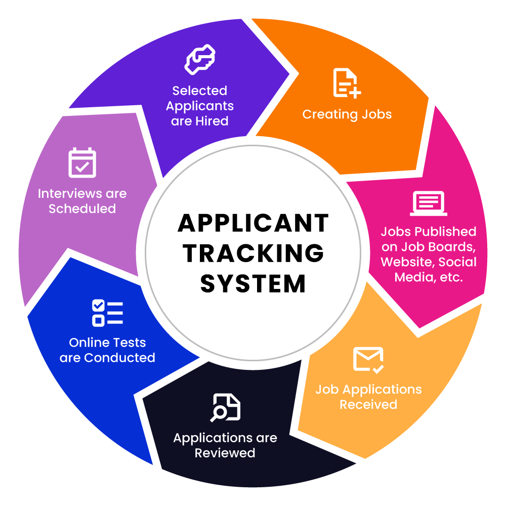
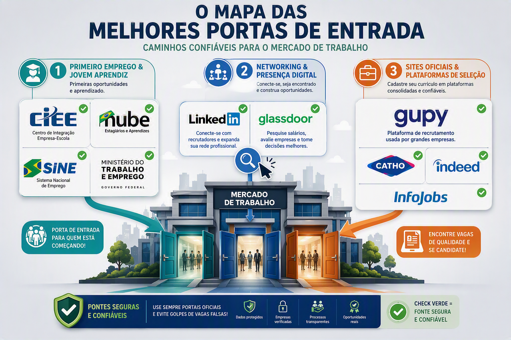

Seu primeiro emprego começa aqui
Currículo Otimizado para ATS Essencial
3 regras de ouro para o robô de seleção ler seu currículo (formatos limpos, palavras-chave da vaga e seções essenciais).

Onde Buscar Vagas Atualizado
As melhores portas de entrada (programas de Jovem Aprendiz, LinkedIn inicial e sites confiáveis).
Dica de Ouro: Mantenha seu perfil do LinkedIn atualizado semanalmente para aumentar as chances de visualização por recrutadores.
